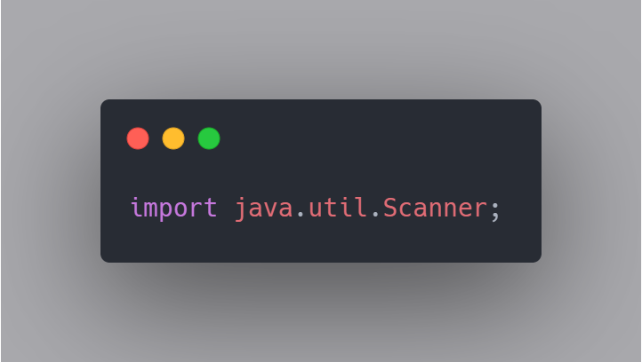
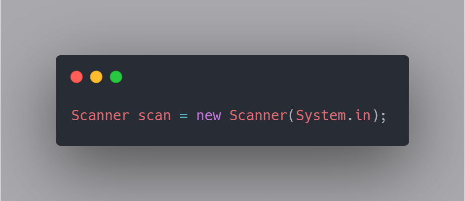
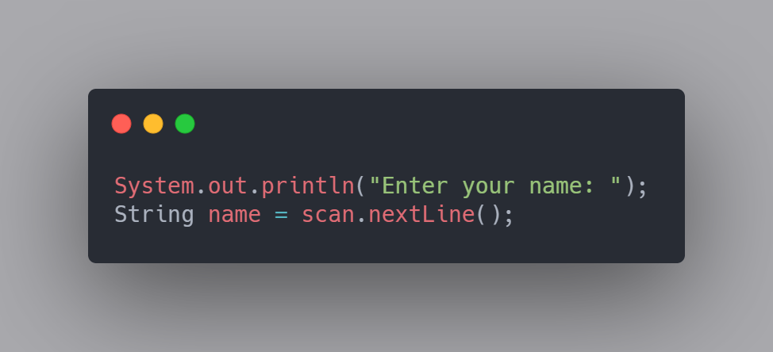
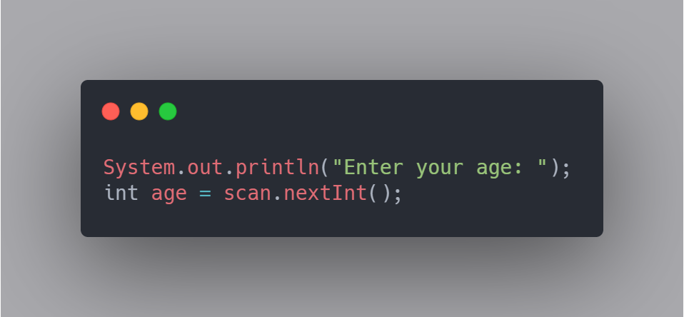

Java Basics 101
Lesson 2 - Inputs and Outputs
Congratulations on completing the first lesson of Java Basics! In this next lesson we will be discussing inputs and outputs. We will go over how to print outputs for the user to see as well as how to take in input values from the user. The outputs we will be using are the print and println functions. The inputs object we will be using will are scanners.
Outputs are when you get the computer to respond and print something for the user. It can be something hard coded, such as "Hello World!" or it can print out variables.
The way we utilize a print or print line method is by first calling the System class. Then utilizing an instance of Print Streaming using the "Out" keyword. Finalling calling the method Print or Println to output your message. Anything inside those brackets will be what is output to the user. In this case I have hard coded the standard "Hello World!" statement.
There are many ways to utilize print and println. You can mix in hard coded pieces with variables. To do this you add them together by using the '+' symbol.
In this example I have two variables. I have a string called "name" which is given the value of "Joey". I also have an integer called "age" which holds a value of 18. This piece of code will write two lines to the user. The first line will say "My name is Joey". The second line will say "I am 18 years old". Since I used println instead of print, it skips a line between them. If I had used print for both of these statements, they would have been printed back to back on the same line.
Now that we have learned about how the computer can write things to the user, lets discuss how the computer can accept inputs written by users. In this section I will be talking about Scanners.
The first thing we will have to do, is import the Scanner class. This is done at the very top of your Java file.
The second thing we will have to do is to create a scanner object. In this case, I called mine "scan". This is a scanner object that you are creating that you can give any variable name to. You will use this variable name to call your scanner later to take the users input.
The next step is to promt the user and tell them what you want them to input. In this section all I will be asking them to input is their name and their age.
In the code above, I am prompting the user with a println telling them to enter their name. I am then using the scanner we created earlier to take their input into a string called "name".
In the code above, I am prompting the user with a println telling them to enter their age. I am then using the same scanner we used to get their name, to take their age input and place it in an integer called "age".
Notice one major difference between when I was taking in the name versus the age. The scanner has multiple methods for different inputs. The "nextLine" method will store the whole line the user enters. The "nextInt" method is looking for just the integer number added. There is also methods for "nextFloat" and "nextChar" as well.